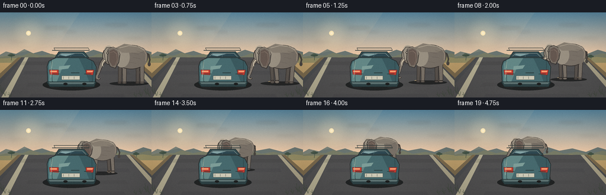
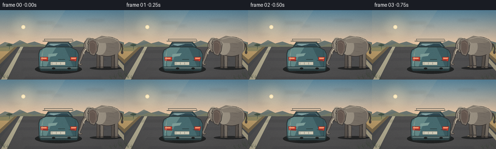
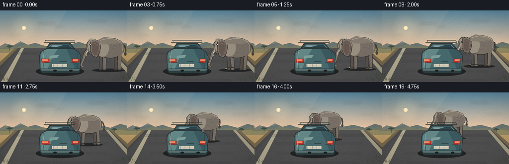
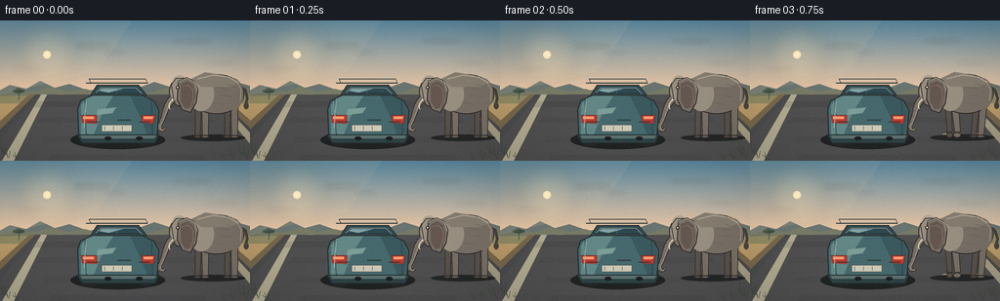
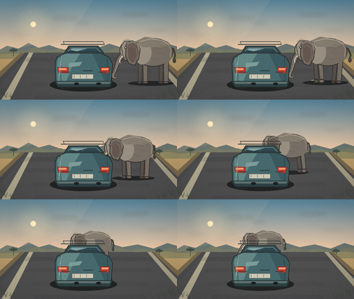
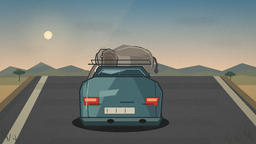
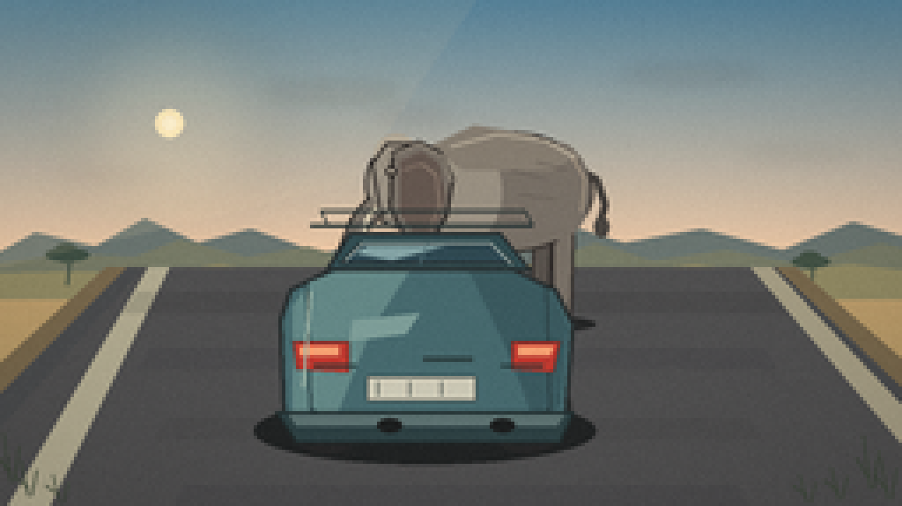
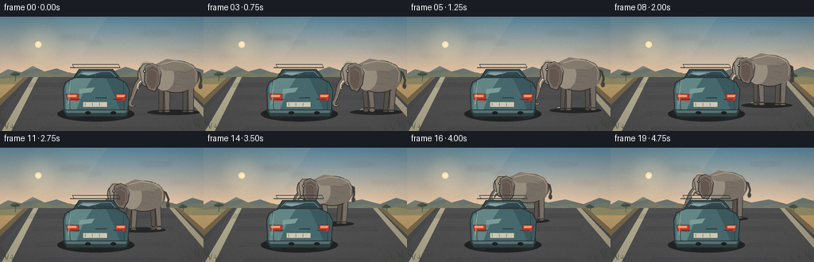
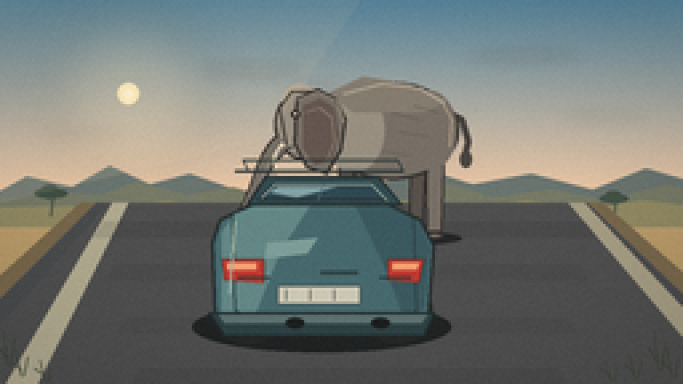

CODING AGENTS AS PIXEL WORLD MODELS
traex/DeepSeek-V4.1-Flash · dynamic_spatial_relationship_0064
点击播放 · 原生 RGB 像素
逐轮保存的候选
回放视频、检查图与代码变化。
每份候选均可单独播放。实际图片检查记录在下方工具轨迹中。
候选 01播放与检查图
点击播放 · 原生 RGB 像素


展开代码变化
--- 上一保存版本
+++ 本次保存版本
@@ -0,0 +1,555 @@
+from __future__ import annotations
+
+import math
+from pathlib import Path
+
+import numpy as np
+from PIL import Image, ImageDraw, ImageFilter
+
+import artifact_io
+
+
+W, H = 256, 144
+SS = 4
+FPS = 4
+FRAME_COUNT = 20
+
+
+def sc(value: float) -> int:
+ return int(round(value * SS))
+
+
+def points(seq):
+ return [(sc(x), sc(y)) for x, y in seq]
+
+
+def rgba(color, alpha=255):
+ return tuple(color) + (alpha,)
+
+
+def cubic_bezier(control, samples=18):
+ p0, p1, p2, p3 = [np.asarray(p, dtype=float) for p in control]
+ out = []
+ for t in np.linspace(0.0, 1.0, samples):
+ u = 1.0 - t
+ point = u**3 * p0 + 3 * u**2 * t * p1 + 3 * u * t**2 * p2 + t**3 * p3
+ out.append((float(point[0]), float(point[1])))
+ return out
+
+
+def tube(draw, centerline, widths, fill, outline, outline_width=1.2):
+ """Draw a smoothly tapered tube from a 2D centerline."""
+ if len(centerline) < 2:
+ return
+ left, right = [], []
+ for i, (x, y) in enumerate(centerline):
+ x0, y0 = centerline[max(0, i - 1)]
+ x1, y1 = centerline[min(len(centerline) - 1, i + 1)]
+ dx, dy = x1 - x0, y1 - y0
+ length = max(1e-5, math.hypot(dx, dy))
+ nx, ny = -dy / length, dx / length
+ width = widths[min(i, len(widths) - 1)] * 0.5
+ left.append((x + nx * width, y + ny * width))
+ right.append((x - nx * width, y - ny * width))
+ polygon = points(left + list(reversed(right)))
+ draw.polygon(polygon, fill=outline)
+ inner = Image.new("RGBA", draw._image.size, (0, 0, 0, 0))
+ inner_draw = ImageDraw.Draw(inner)
+ inner_left = []
+ inner_right = []
+ for i, (x, y) in enumerate(centerline):
+ x0, y0 = centerline[max(0, i - 1)]
+ x1, y1 = centerline[min(len(centerline) - 1, i + 1)]
+ dx, dy = x1 - x0, y1 - y0
+ length = max(1e-5, math.hypot(dx, dy))
+ nx, ny = -dy / length, dx / length
+ width = max(0.4, widths[min(i, len(widths) - 1)] * 0.5 - outline_width)
+ inner_left.append((x + nx * width, y + ny * width))
+ inner_right.append((x - nx * width, y - ny * width))
+ inner_draw.polygon(points(inner_left + list(reversed(inner_right))), fill=fill)
+ draw._image.alpha_composite(inner)
+
+
+def ellipse(draw, box, fill, outline=None, width=1):
+ box = (sc(box[0]), sc(box[1]), sc(box[2]), sc(box[3]))
+ draw.ellipse(box, fill=fill, outline=outline, width=sc(width))
+
+
+def polygon(draw, seq, fill, outline=None, width=1):
+ draw.polygon(points(seq), fill=fill, outline=outline, width=sc(width))
+
+
+def line(draw, seq, fill, width=1, joint="curve"):
+ draw.line(points(seq), fill=fill, width=max(1, sc(width)), joint=joint)
+
+
+def make_background():
+ """Build the static sky, hills, road, and roadside texture."""
+ width, height = W * SS, H * SS
+ y = np.linspace(0.0, 1.0, height, dtype=np.float32)
+ horizon = 0.52
+ sky_t = np.clip(y / horizon, 0.0, 1.0)[:, None]
+ top = np.array([88, 135, 158], dtype=np.float32)
+ bottom = np.array([241, 201, 163], dtype=np.float32)
+ sky = top * (1.0 - sky_t) + bottom * sky_t
+ ground = np.array([166, 142, 91], dtype=np.float32)
+ ground_far = np.array([190, 159, 109], dtype=np.float32)
+ ground_t = np.clip((y - horizon) / (1.0 - horizon), 0.0, 1.0)[:, None]
+ terrain = ground_far * (1.0 - ground_t) + ground * ground_t
+ rows = np.where((y[:, None] < horizon), sky, terrain)
+ base = np.repeat(rows[:, None, :], width, axis=1).astype(np.uint8)
+ image = Image.fromarray(base, "RGB").convert("RGBA")
+
+ # Low sun glow, placed left of the car.
+ glow = Image.new("RGBA", image.size, (0, 0, 0, 0))
+ gd = ImageDraw.Draw(glow)
+ for radius, alpha in [(31, 22), (23, 32), (16, 50)]:
+ gd.ellipse(
+ (sc(48 - radius), sc(35 - radius), sc(48 + radius), sc(35 + radius)),
+ fill=(255, 226, 173, alpha),
+ )
+ glow = glow.filter(ImageFilter.GaussianBlur(9 * SS))
+ image = Image.alpha_composite(image, glow)
+ draw = ImageDraw.Draw(image)
+ ellipse(draw, (44, 31, 52, 39), (255, 235, 187, 150))
+ ellipse(draw, (46, 33, 50, 37), (255, 244, 208, 220))
+
+ # Wispy, horizontal cloud bands.
+ cloud = Image.new("RGBA", image.size, (0, 0, 0, 0))
+ cd = ImageDraw.Draw(cloud)
+ for x, yy, ww, hh, a in [
+ (76, 25, 37, 2.2, 74),
+ (106, 32, 23, 1.6, 56),
+ (176, 20, 40, 2.0, 66),
+ (211, 43, 31, 1.4, 42),
+ (17, 49, 30, 1.2, 35),
+ ]:
+ ellipse(cd, (x, yy, x + ww, yy + hh), (255, 235, 218, a))
+ cloud = cloud.filter(ImageFilter.GaussianBlur(2.2 * SS))
+ image = Image.alpha_composite(image, cloud)
+ draw = ImageDraw.Draw(image)
+
+ # Layered distant ridges and mesas.
+ polygon(
+ draw,
+ [(-10, 77), (10, 66), (27, 70), (41, 62), (56, 69), (71, 65),
+ (91, 72), (115, 66), (136, 71), (158, 63), (177, 69), (199, 65),
+ (222, 71), (242, 63), (266, 70), (266, 82), (-10, 82)],
+ (104, 116, 111, 150),
+ )
+ polygon(
+ draw,
+ [(-10, 76), (20, 72), (38, 73), (51, 68), (70, 73), (87, 70),
+ (105, 75), (130, 71), (149, 76), (169, 69), (185, 74), (206, 71),
+ (227, 75), (250, 69), (266, 73), (266, 83), (-10, 83)],
+ (117, 122, 101, 176),
+ )
+ polygon(
+ draw,
+ [(-10, 78), (22, 77), (43, 78), (62, 75), (80, 78), (103, 76),
+ (127, 79), (150, 75), (174, 78), (197, 75), (219, 78), (241, 75),
+ (266, 78), (266, 85), (-10, 85)],
+ (143, 137, 98, 190),
+ )
+
+ # Distant acacia silhouettes, kept small so they do not compete with the action.
+ def acacia(x, y, s, color):
+ line(draw, [(x, y), (x + 1, y - 14 * s)], color, width=1.2 * s)
+ line(draw, [(x + 0.6, y - 9 * s), (x - 5 * s, y - 12 * s)], color, width=0.9 * s)
+ line(draw, [(x + 0.7, y - 11 * s), (x + 7 * s, y - 13 * s)], color, width=0.9 * s)
+ ellipse(draw, (x - 10 * s, y - 17 * s, x + 10 * s, y - 11 * s), color)
+ ellipse(draw, (x - 6 * s, y - 19 * s, x + 5 * s, y - 13 * s), color)
+
+ acacia(19, 81, 0.62, (62, 80, 68, 165))
+ acacia(230, 82, 0.55, (65, 82, 68, 160))
+
+ # Road shoulders and asphalt, converging toward the horizon.
+ polygon(draw, [(30, 76), (226, 76), (304, 144), (-45, 144)], (118, 103, 75, 255))
+ polygon(draw, [(36, 76), (220, 76), (291, 144), (-32, 144)], (72, 75, 76, 255))
+ polygon(draw, [(41, 76), (215, 76), (280, 144), (-20, 144)], (78, 79, 79, 255))
+ polygon(draw, [(42, 76), (48, 76), (14, 144), (2, 144)], (176, 170, 143, 210))
+ polygon(draw, [(213, 76), (219, 76), (283, 144), (271, 144)], (164, 157, 131, 190))
+
+ # Broad tonal bands and sparse asphalt texture.
+ overlay = Image.new("RGBA", image.size, (0, 0, 0, 0))
+ od = ImageDraw.Draw(overlay)
+ for yy, alpha in [(83, 25), (99, 18), (119, 16), (138, 18)]:
+ polygon(
+ od,
+ [(37 + (yy - 76) * 0.25, yy), (221 - (yy - 76) * 0.2, yy),
+ (225 - (yy - 76) * 0.2, yy + 6), (33 + (yy - 76) * 0.25, yy + 6)],
+ (23, 29, 32, alpha),
+ )
+ rng = np.random.default_rng(14)
+ for _ in range(105):
+ yy = rng.uniform(82, 142)
+ left = 39 + (yy - 76) * 0.27
+ right = 220 - (yy - 76) * 0.21
+ xx = rng.uniform(left, right)
+ length = rng.uniform(0.5, 2.0) * (0.45 + (yy - 76) / 66)
+ shade = int(rng.uniform(42, 92))
+ od.line(
+ [(sc(xx), sc(yy)), (sc(xx + length), sc(yy + rng.uniform(-0.2, 0.2)))],
+ (shade, shade + 2, shade + 2, int(rng.uniform(20, 70))),
+ width=max(1, sc(0.35)),
+ )
+ image = Image.alpha_composite(image, overlay)
+
+ # A few grasses at the margins add depth without covering the subjects.
+ draw = ImageDraw.Draw(image)
+ grass = (57, 71, 55, 215)
+ for x, y, h in [(3, 137, 14), (8, 141, 10), (247, 139, 15), (252, 142, 12),
+ (238, 142, 9), (17, 143, 8), (229, 143, 8)]:
+ line(draw, [(x, y), (x - 2, y - h)], grass, width=0.55)
+ line(draw, [(x + 1, y), (x + 2.5, y - h * 0.72)], grass, width=0.45)
+ line(draw, [(x, y - 2), (x - 4, y - h * 0.58)], grass, width=0.4)
+
+ return image
+
+
+def draw_dust(draw, cx, ground, scale, phase, intensity=1.0):
+ if intensity <= 0.01:
+ return
+ for i, (dx, dy, r, a) in enumerate(
+ [(-19, -1.0, 5.0, 32), (-12, 0.0, 3.2, 26), (16, -0.5, 4.4, 30)]
+ ):
+ wobble = math.sin(phase * 1.3 + i * 2.1) * 1.3
+ x = cx + dx * scale + wobble
+ y = ground + dy - 0.5 * i
+ ellipse(
+ draw,
+ (x - r * scale, y - r * 0.32 * scale, x + r * scale, y + r * 0.32 * scale),
+ (197, 172, 123, int(a * intensity)),
+ )
+
+
+def draw_elephant(draw, cx, ground, scale, walk_phase, trunk_sway, ear_flap):
+ """Draw a side-profile elephant facing left; feet land at `ground`."""
+ cy = ground - 43 * scale
+ outline = (49, 46, 43, 255)
+ shadow = (71, 68, 63, 255)
+ far = (86, 81, 75, 255)
+ body = (118, 111, 101, 255)
+ lit = (151, 143, 128, 255)
+ highlight = (174, 164, 145, 255)
+ inner_ear = (99, 87, 79, 255)
+
+ def P(seq):
+ return [(cx + x * scale, cy + y * scale) for x, y in seq]
+
+ # Soft contact shadow.
+ ellipse(
+ draw,
+ (cx - 35 * scale, ground - 2.0 * scale, cx + 31 * scale, ground + 4.8 * scale),
+ (35, 38, 38, 88),
+ )
+
+ # Far legs move opposite the near legs.
+ leg_specs = [
+ (-17.0, -0.8, 4.9, far, 0.0),
+ (13.0, -0.5, 5.0, far, math.pi),
+ (-10.0, 0.0, 5.5, body, 0.0),
+ (20.0, 0.0, 5.7, body, math.pi),
+ ]
+ for hip_x, xoff, width, color, offset in leg_specs:
+ gait = math.sin(walk_phase + offset)
+ lift = max(0.0, gait) * 3.2
+ swing = gait * 3.2
+ foot_x = hip_x + xoff + swing
+ leg_top = 7.0
+ leg_bottom = 42.0 - lift
+ leg = [
+ (hip_x - width * 0.72, leg_top),
+ (hip_x + width * 0.72, leg_top),
+ (foot_x + width * 0.62, leg_bottom - 2),
+ (foot_x + width * 0.58, leg_bottom),
+ (foot_x - width * 0.7, leg_bottom),
+ (foot_x - width * 0.55, leg_bottom - 2.3),
+ ]
+ polygon(draw, P(leg), color, outline, 0.8)
+ ellipse(
+ draw,
+ (cx + (foot_x - width * 0.75) * scale, ground - (lift + 1.2) * scale,
+ cx + (foot_x + width * 0.72) * scale, ground + 1.6 * scale),
+ color,
+ outline,
+ 0.7,
+ )
+
+ # Tail and tuft.
+ tail_swing = math.sin(walk_phase * 0.8) * 1.8
+ line(
+ draw,
+ P([(25, -8), (31, -5), (33 + tail_swing, 4), (31 + tail_swing, 11)]),
+ outline,
+ width=2.4 * scale,
+ )
+ line(
+ draw,
+ P([(25, -8), (31, -5), (33 + tail_swing, 4), (31 + tail_swing, 10)]),
+ shadow,
+ width=1.4 * scale,
+ )
+ ellipse(
+ draw,
+ (cx + (29.5 + tail_swing) * scale, cy + 8.0 * scale,
+ cx + (34.5 + tail_swing) * scale, cy + 15.0 * scale),
+ shadow,
+ )
+
+ # Rump, torso, and shoulder.
+ ellipse(draw, (cx - 27 * scale, cy - 21 * scale, cx + 30 * scale, cy + 20 * scale),
+ body, outline, 1.0 * scale)
+ ellipse(draw, (cx + 7 * scale, cy - 17 * scale, cx + 29 * scale, cy + 16 * scale),
+ body)
+ ellipse(draw, (cx - 27 * scale, cy - 18 * scale, cx - 1 * scale, cy + 17 * scale),
+ lit)
+ polygon(draw, P([(-25, -16), (-10, -23), (9, -20), (25, -13), (16, -8), (-14, -8)]),
+ (132, 124, 111, 255))
+ line(draw, P([(-18, -16), (-2, -20), (14, -18), (24, -12)]), highlight, width=1.2 * scale)
+
+ # Head and domed forehead.
+ ellipse(draw, (cx - 47 * scale, cy - 18 * scale, cx - 22 * scale, cy + 12 * scale),
+ lit, outline, 1.0 * scale)
+ ellipse(draw, (cx - 44 * scale, cy - 20 * scale, cx - 29 * scale, cy - 4 * scale),
+ highlight)
+ polygon(draw, P([(-45, -10), (-40, -17), (-29, -17), (-22, -9), (-27, 5), (-42, 7)]),
+ lit, outline, 0.8)
+
+ # Large flapping ear, with a dark inner plane.
+ ear_width = 13.5 + ear_flap * 2.2
+ ear_drop = ear_flap * 2.0
+ ear_shape = [
+ (-38, -14),
+ (-29, -18),
+ (-21, -14),
+ (-17, -5),
+ (-19, 8 + ear_drop),
+ (-25, 18 + ear_drop),
+ (-34, 15 + ear_drop),
+ (-39, 5),
+ ]
+ polygon(draw, P(ear_shape), body, outline, 1.0)
+ polygon(
+ draw,
+ P([(-35, -11), (-28, -14), (-22, -10), (-20, 1), (-23, 12 + ear_drop),
+ (-30, 14 + ear_drop), (-35, 7)]),
+ inner_ear,
+ )
+ line(
+ draw,
+ P([(-34, -8), (-28, -10), (-23, -6), (-22, 4), (-25, 12 + ear_drop)]),
+ (132, 116, 103, 220),
+ width=0.8 * scale,
+ )
+ # Thin lit rim along the ear.
+ line(
+ draw,
+ P([(-38, -13), (-29, -17), (-21, -13), (-18, -4)]),
+ (181, 170, 150, 225),
+ width=0.65 * scale,
+ )
+
+ # Trunk: a tapered curve with a small inward curl at the tip.
+ trunk_controls = [
+ (-43, 4),
+ (-51 + trunk_sway * 0.3, 11),
+ (-51 + trunk_sway, 22),
+ (-57 + trunk_sway, 32),
+ ]
+ trunk_line = cubic_bezier(trunk_controls, samples=20)
+ tip_x = -57 + trunk_sway
+ tip_y = 32
+ curl = cubic_bezier(
+ [(tip_x, tip_y), (tip_x - 1.4, tip_y + 4.5),
+ (tip_x + 4.0, tip_y + 6.2), (tip_x + 5.8, tip_y + 2.5)],
+ samples=8,
+ )
+ trunk_line.extend(curl[1:])
+ widths = [7.8, 7.3, 6.5, 5.7, 5.0, 4.4, 3.8, 3.2, 2.7]
+ widths = [widths[min(int(i / max(1, len(trunk_line) - 1) * (len(widths) - 1)), len(widths) - 1)]
+ for i in range(len(trunk_line))]
+ tube(
+ draw,
+ P(trunk_line),
+ [w * scale for w in widths],
+ body,
+ outline,
+ outline_width=0.85 * scale,
+ )
+ # Trunk highlights and folds.
+ inner_line = [(x + 1.2, y) for x, y in trunk_line[2:-2]]
+ line(draw, P(inner_line), (152, 143, 129, 225), width=0.9 * scale)
+ for tx, ty in [(-50, 17), (-52, 22), (-54, 27)]:
+ line(draw, P([(tx, ty), (tx + 4.0, ty + 0.6)]), (84, 78, 71, 160), width=0.55 * scale)
+
+ # Tusk and mouth.
+ tusk = cubic_bezier([(-43, 5), (-47, 8), (-48, 12), (-46, 15)], samples=10)
+ tube(
+ draw,
+ P(tusk),
+ [2.5 * scale, 1.8 * scale, 1.2 * scale, 0.6 * scale],
+ (231, 219, 188, 255),
+ (117, 104, 88, 255),
+ outline_width=0.35 * scale,
+ )
+ line(draw, P([(-42, 8), (-36, 9)]), (54, 48, 44, 255), width=0.65 * scale)
+ ellipse(draw, (cx - 40 * scale, cy - 9 * scale, cx - 36.5 * scale, cy - 5.5 * scale),
+ (38, 35, 33, 255))
+ ellipse(draw, (cx - 39 * scale, cy - 8.2 * scale, cx - 37.4 * scale, cy - 6.6 * scale),
+ (222, 210, 185, 255))
+
+ # Body wrinkles and warm rim light.
+ for x0, y0, x1, y1 in [
+ (2, -8, 14, -5), (5, 0, 17, 2), (-2, 8, 10, 10), (11, -11, 21, -8)
+ ]:
+ line(draw, P([(x0, y0), (x1, y1)]), (93, 86, 79, 120), width=0.55 * scale)
+ line(draw, P([(23, -12), (27, -5), (26, 6)]), (174, 157, 134, 210), width=0.7 * scale)
+
+
+def draw_car(draw):
+ """Draw a rear three-quarter compact SUV facing into the scene."""
+ shadow = (31, 35, 35, 120)
+ tire = (37, 39, 39, 255)
+ tire_side = (52, 53, 52, 255)
+ rim = (132, 130, 117, 255)
+ outline = (39, 48, 49, 255)
+ body_dark = (54, 83, 87, 255)
+ body = (69, 105, 109, 255)
+ body_lit = (98, 135, 133, 255)
+ glass = (45, 72, 81, 255)
+ glass_lit = (117, 153, 155, 255)
+
+ ellipse(draw, (72, 113, 169, 132), shadow)
+
+ # Wheels and wheel arches.
+ ellipse(draw, (80, 104, 105, 129), tire)
+ ellipse(draw, (137, 104, 162, 129), tire)
+ ellipse(draw, (84, 108, 101, 125), tire_side)
+ ellipse(draw, (141, 108, 158, 125), tire_side)
+ ellipse(draw, (88, 112, 97, 121), rim)
+ ellipse(draw, (145, 112, 154, 121), rim)
+ ellipse(draw, (90.5, 114.5, 94.5, 118.5), (72, 77, 74, 255))
+ ellipse(draw, (147.5, 114.5, 151.5, 118.5), (72, 77, 74, 255))
+
+ # Main rear body.
+ polygon(
+ draw,
+ [(79, 91), (82, 82), (94, 76), (145, 76), (158, 82), (163, 92),
+ (161, 118), (154, 126), (87, 126), (80, 118)],
+ body, outline, 1.2,
+ )
+ polygon(
+ draw,
+ [(83, 87), (88, 80), (99, 76), (116, 77), (105, 94), (95, 119), (83, 117)],
+ body_lit,
+ )
+ polygon(
+ draw,
+ [(133, 77), (145, 77), (157, 83), (161, 93), (159, 115), (152, 121),
+ (145, 102), (137, 85)],
+ (57, 89, 94, 255),
+ )
+
+ # Roof and rear glass.
+ polygon(draw, [(92, 77), (99, 66), (142, 66), (151, 77)], (48, 76, 80, 255), outline, 1.0)
+ polygon(draw, [(96, 75), (102, 69), (139, 69), (146, 75)], glass, outline, 0.7)
+ polygon(draw, [(101, 72), (104, 70), (126, 70), (111, 74)], (129, 161, 162, 180))
+ line(draw, [(98, 74), (103, 69), (139, 69), (145, 75)], (167, 184, 178, 160), width=0.55)
+ line(draw, [(121, 69), (119, 75)], (82, 112, 117, 210), width=0.55)
+ line(draw, [(88, 64), (151, 64)], (39, 54, 54, 255), width=1.1)
+ line(draw, [(93, 64), (91, 60), (149, 60), (151, 64)], (40, 52, 52, 230), width=0.7)
+
+ # Hatch seams, handle, taillights, and bumper.
+ line(draw, [(87, 81), (88, 116), (95, 122)], (44, 69, 72, 210), width=0.7)
+ line(draw, [(155, 82), (156, 116), (151, 121)], (44, 66, 69, 210), width=0.7)
+ polygon(draw, [(83, 97), (99, 97), (99, 106), (84, 105)], (188, 58, 48, 255),
+ (92, 44, 39, 255), 0.6)
+ polygon(draw, [(145, 97), (159, 97), (157, 106), (145, 105)], (188, 58, 48, 255),
+ (92, 44, 39, 255), 0.6)
+ polygon(draw, [(85, 98.5), (96, 98.5), (96, 101), (85, 101)], (244, 157, 111, 255))
+ polygon(draw, [(147, 98.5), (157, 98.5), (156, 101), (147, 101)], (244, 157, 111, 255))
+ line(draw, [(120, 102), (134, 102)], (45, 67, 68, 255), width=1.5)
+ polygon(draw, [(104, 107), (135, 107), (135, 114), (104, 114)], (203, 200, 180, 255),
+ (76, 82, 76, 255), 0.5)
+ for xx in [107, 116, 125]:
+ line(draw, [(xx, 108.5), (xx, 112.5)], (71, 82, 80, 180), width=0.4)
+ polygon(draw, [(78, 117), (163, 117), (159, 126), (84, 126)], (44, 65, 67, 255),
+ (31, 45, 46, 255), 0.8)
+ polygon(draw, [(82, 118), (160, 118), (158, 121), (84, 121)], (91, 113, 112, 255))
+ ellipse(draw, (107, 119, 114, 123), (27, 31, 31, 255))
+ ellipse(draw, (139, 119, 146, 123), (27, 31, 31, 255))
+
+ # Door handles and reflections.
+ polygon(draw, [(100, 91), (119, 89), (115, 95), (99, 97)], (124, 157, 151, 75))
+ line(draw, [(88, 83), (86, 110)], (162, 181, 165, 120), width=0.7)
+ line(draw, [(89, 104), (101, 104)], (29, 51, 52, 255), width=0.7)
+ line(draw, [(142, 104), (154, 104)], (29, 51, 52, 255), width=0.7)
+
+
+def render_frame(background, index):
+ image = background.copy()
+ draw = ImageDraw.Draw(image)
+
+ # Hold the opening pose, then use a smooth ease for the walk.
+ u = max(0.0, min(1.0, (index - 2) / 17.0))
+ ease = u * u * (3.0 - 2.0 * u)
+ cx = 220.0 - 89.0 * ease
+ ground = 119.0 - 24.0 * ease
+ scale = 1.0 - 0.235 * ease
+ walking = max(0.0, min(1.0, (index - 2) / 3.0))
+ walk_phase = max(0, index - 2) * 1.12
+ trunk_sway = math.sin(walk_phase * 0.56) * 2.0 + walking * math.sin(walk_phase * 0.31) * 1.2
+ ear_flap = math.sin(walk_phase * 0.47 + 0.5) * 0.8
+
+ # Feet stir dust as the elephant starts moving; it fades once behind the car.
+ dust_intensity = walking * max(0.0, 1.0 - ease * 0.75)
+ draw_dust(draw, cx, ground, scale, walk_phase, dust_intensity)
+ draw_elephant(draw, cx, ground, scale, walk_phase, trunk_sway, ear_flap)
+
+ # The car is the foreground occluder, making the final relation unambiguous.
+ draw_car(draw)
+
+ # Fine atmospheric light: a faint warm bloom from the upper left.
+ bloom = Image.new("RGBA", image.size, (0, 0, 0, 0))
+ bd = ImageDraw.Draw(bloom)
+ polygon(
+ bd,
+ [(0, 0), (135, 0), (100, 52), (0, 76)],
+ (255, 223, 172, 17),
+ )
+ image = Image.alpha_composite(image, bloom)
+ return image
+
+
+def finish_frame(image, index):
+ small = image.convert("RGB").resize((W, H), Image.Resampling.LANCZOS)
+ arr = np.asarray(small).astype(np.float32)
+ yy, xx = np.mgrid[0:H, 0:W]
+ nx = (xx - W * 0.5) / (W * 0.5)
+ ny = (yy - H * 0.5) / (H * 0.5)
+ vignette = 1.0 - 0.10 * np.clip((nx * nx + ny * ny - 0.35) / 1.3, 0.0, 1.0)
+ arr *= vignette[..., None]
+
+ # Gentle warm highlights and cool shadows.
+ lum = arr.mean(axis=2, keepdims=True) / 255.0
+ arr[..., 0] += (1.0 - lum[..., 0]) * 2.2
+ arr[..., 2] += lum[..., 0] * 1.2
+
+ # Deterministic grain prevents perfectly flat gradients.
+ rng = np.random.default_rng(900 + index)
+ grain = rng.normal(0.0, 1.15, (H, W, 1))
+ arr += grain
+ return np.clip(arr, 0, 255).astype(np.uint8)
+
+
+def main():
+ background = make_background()
+ frames = []
+ for index in range(FRAME_COUNT):
+ frames.append(finish_frame(render_frame(background, index), index))
+ artifact_io.save(np.stack(frames), Path(__file__).resolve().parent)
+
+
+if __name__ == "__main__":
+ main()
候选 02播放与检查图
点击播放 · 原生 RGB 像素


展开代码变化
--- 上一保存版本
+++ 本次保存版本
@@ -494,9 +494,9 @@
# Hold the opening pose, then use a smooth ease for the walk.
u = max(0.0, min(1.0, (index - 2) / 17.0))
ease = u * u * (3.0 - 2.0 * u)
- cx = 220.0 - 89.0 * ease
- ground = 119.0 - 24.0 * ease
- scale = 1.0 - 0.235 * ease
+ cx = 220.0 - 77.0 * ease
+ ground = 119.0 - 28.0 * ease
+ scale = 1.0 - 0.16 * ease
walking = max(0.0, min(1.0, (index - 2) / 3.0))
walk_phase = max(0, index - 2) * 1.12
trunk_sway = math.sin(walk_phase * 0.56) * 2.0 + walking * math.sin(walk_phase * 0.31) * 1.2
候选 03播放与检查图
点击播放 · 原生 RGB 像素

展开代码变化
--- 上一保存版本
+++ 本次保存版本
@@ -98,7 +98,7 @@
terrain = ground_far * (1.0 - ground_t) + ground * ground_t
rows = np.where((y[:, None] < horizon), sky, terrain)
base = np.repeat(rows[:, None, :], width, axis=1).astype(np.uint8)
- image = Image.fromarray(base, "RGB").convert("RGBA")
+ image = Image.fromarray(base).convert("RGBA")
# Low sun glow, placed left of the car.
glow = Image.new("RGBA", image.size, (0, 0, 0, 0))
@@ -494,9 +494,9 @@
# Hold the opening pose, then use a smooth ease for the walk.
u = max(0.0, min(1.0, (index - 2) / 17.0))
ease = u * u * (3.0 - 2.0 * u)
- cx = 220.0 - 77.0 * ease
- ground = 119.0 - 28.0 * ease
- scale = 1.0 - 0.16 * ease
+ cx = 220.0 - 75.0 * ease
+ ground = 119.0 - 31.0 * ease
+ scale = 1.0 - 0.10 * ease
walking = max(0.0, min(1.0, (index - 2) / 3.0))
walk_phase = max(0, index - 2) * 1.12
trunk_sway = math.sin(walk_phase * 0.56) * 2.0 + walking * math.sin(walk_phase * 0.31) * 1.2

可观测工具轨迹
实际执行的命令与返回图片。
命令 1exit 0
/bin/bash -c "pwd && rg --files -g '"'!**/.git/**'"' | sed -n '1,160p'"
命令 2exit 0
/bin/bash -c "printf '%s\\n' '--- prompt.txt ---'; cat prompt.txt; printf '%s\\n' '--- GENERATION_RULES.md ---'; cat GENERATION_RULES.md; printf '%s\\n' '--- task_spec.json ---'; cat task_spec.json"
命令 3exit 0
/bin/bash -c "find . -maxdepth 2 -type f -printf '%p %s bytes\\n' | sort | sed -n '1,200p'; printf '\\nTools:\\n'; command -v ffmpeg || true; command -v python3 || true; command -v blender || true; command -v convert || true; command -v node || true"
命令 4exit 0
/bin/bash -c "sed -n '1,240p' artifact_io.py; printf '\\n--- player ---\\n'; sed -n '1,240p' player_template.html"
命令 5exit 0
/bin/bash -c 'python3 generate.py'
命令 6exit 0
/bin/bash -c "python3 - <<'PY'
from PIL import Image
from pathlib import Path
ims=[Image.open(f'frames/{i:02d}.png') for i in [0,4,8,12,16,19]]
out=Image.new('RGB',(512,432),(20,20,20))
for k,im in enumerate(ims):
x=(k%2)*256;y=(k//2)*144
out.paste(im.resize((256,144)),(x,y))
out.save('check_large.png')
PY"命令 7exit 0
/bin/bash -c 'python3 generate.py'
命令 8exit 0
/bin/bash -c "python3 - <<'PY'
from PIL import Image
im=Image.open('frames/19.png')
im.resize((1024,576), Image.Resampling.NEAREST).save('final_zoom.png')
PY"命令 9exit 0
/bin/bash -c "python3 generate.py && python3 - <<'PY'
from pathlib import Path
from PIL import Image
import numpy as np
frames=np.stack([np.asarray(Image.open(f'frames/{i:02d}.png')) for i in range(20)])
print('shape', frames.shape, 'dtype', frames.dtype)
print('frame range', frames.min(), frames.max())
print('mean consecutive pixel change', np.abs(frames[1:].astype(int)-frames[:-1].astype(int)).mean())
print('first/last changed pixels', np.any(frames[0]"'!=frames[-1],axis=2).sum())
print('"'artifacts', [(p.name,p.stat().st_size) for p in [Path('pixels.npz'),Path('index.html'),Path('inspection.png')]])
PY"命令 10exit 0
/bin/bash -c "python3 - <<'PY'
from PIL import Image
im=Image.open('frames/19.png')
im.resize((768,432), Image.Resampling.NEAREST).save('final_zoom.png')
PY"命令 11exit 0
/bin/bash -c 'unlink check_large.png; unlink final_zoom.png'
命令 12exit 0
/bin/bash -c 'python3 -m py_compile generate.py'
命令 13exit 1
/bin/bash -c "python3 - <<'PY'
from pathlib import Path
import json
import numpy as np
from PIL import Image
p=Path('.')
spec=json.loads(Path('task_spec.json').read_text())
with np.load('pixels.npz') as z:
px=z['pixels']
assert px.shape == (20,144,256) and px.dtype == np.uint32
for i in range(20):
im=Image.open(p/'frames'/f'{i:02d}.png')
assert im.size == (256,144) and im.mode == 'RGB'
assert Path('index.html').is_file() and Path('inspection.png').is_file()
print('verified:', spec['frames'], 'frames,', spec['width'], 'x', spec['height'], 'RGB at', spec['fps'], 'fps')
print('required artifacts:', ', '.join(x.name for x in [p/'generate.py',p/'pixels.npz',p/'index.html',p/'inspection.png']))
PY"命令 14exit 0
/bin/bash -c "python3 - <<'PY'
from pathlib import Path
import json
import numpy as np
from PIL import Image
p=Path('.')
spec=json.loads(Path('task_spec.json').read_text())
with np.load('pixels.npz') as z:
px=z['pixels']
print('packed', px.shape, px.dtype)
assert px.shape == (144,256,20) and px.dtype == np.uint32
for i in range(20):
im=Image.open(p/'frames'/f'{i:02d}.png')
assert im.size == (256,144) and im.mode == 'RGB'
packed = ((np.asarray(im)[:,:,0].astype(np.uint32) << 16) |
(np.asarray(im)[:,:,1].astype(np.uint32) << 8) |
np.asarray(im)[:,:,2].astype(np.uint32))
assert np.array_equal(packed, px[:,:,i])
assert Path('index.html').is_file() and Path('inspection.png').is_file()
print('verified:', spec['frames'], 'frames,', spec['width'], 'x', spec['height'], 'RGB at', spec['fps'], 'fps')
print('required artifacts:', ', '.join(x.name for x in [p/'generate.py',p/'pixels.npz',p/'index.html',p/'inspection.png']))
PY"命令 15exit 0
/bin/bash -c "find . -maxdepth 2 -type f -printf '%p\\n' | sort; git status --short 2>/dev/null || true"
命令 16exit 0
/bin/bash -c 'unlink __pycache__/generate.cpython-311.pyc; unlink __pycache__/artifact_io.cpython-311.pyc; rmdir __pycache__'
命令 17exit 0
/bin/bash -c 'git status --short -- .'
视觉工具实际返回图片 1

视觉工具实际返回图片 2

视觉工具实际返回图片 3

视觉工具实际返回图片 4

视觉工具实际返回图片 5

视觉工具实际返回图片 6

视觉工具实际返回图片 7

保存候选 4 份；完成命令 17 次；可验证图片返回 7 张。原始 API 响应与完整日志保留在本地。